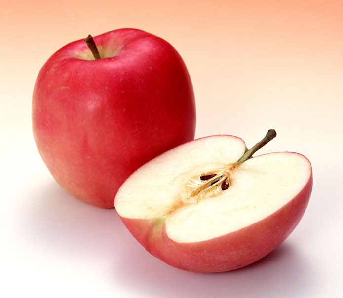
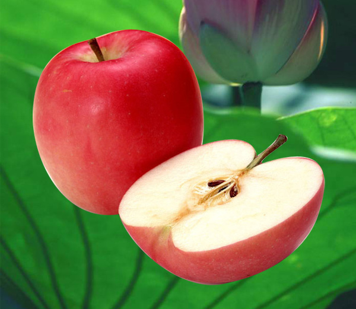

[要求]
在Photoshop CS2中打开“荷花”、“苹果”和“效果图”图像，观察效果图，按照提示编辑图像，直至达到最终效果（更换苹果背景），创建苹果选区必须使用钢笔工具绘制路径，并将路径保存。务必将结果以psd格式保存。
[提示]
（1）用钢笔工具在“苹果”图像上沿苹果边缘创建曲线路径，使用直接选择工具和转换点工具调整路径，使路径尽量和苹果边缘重叠。将路径保存为“路径1”。
（2）在路径调板中将“路径1”转化为选区，设置适当的羽化值。
（3）使用移动工具将选区内的苹果拖拽到“荷花”上，将新图层命名为“苹果”
（4）调整“苹果”层的大小及位置。
（5）使用裁切工具将图像多余的部分裁切掉。
（6）将图像以psd格式保存。
苹果
荷花
效果图
